| Duration..min. | Power..W. | Heart.Rate..bpm. |
|---|---|---|
| 5 | 250-270 | 120-140 |
| 80 | 280-300 | 140-160 |
| 5 | 240-260 | 120-130 |
Large language models tools such as chatGPT opened up endless possibilities to automate and enhance several aspects of our lives. From clever nutrition coaches to improved chat bots, and from fraud detection tools to sports coaches, AI is now everywhere.
While these models are complex, it is crucial that we can still interpret their results. Model interpretability is especially important in highly regulated sectors like finance and medicine, but it should not be underestimated in consumer-oriented applications.
Today, we will use a commercial platform called Humango to demonstrate the importance of model interpretability. Before we proceed, I’d like to clarify that I have no affiliation with Humango. I am a subscriber who pays for the service and appreciates what they offer, despite some shortcomings.
Background Information
About Me
Those who follow me on Medium may know that I enjoy training and participating in triathlon events. As someone who is passionate about data, I love delving deep into the information provided by my training gadgets. If you want to read more about the races I do and the gear I use, you can find me here.
Humango
Humango is a relatively new player in the field of training plan providers. Their main selling point is individualized and adaptive training plans. They achieve this by collecting background information, assigning workouts based on schedule constraints, fitness level, and race goals, automatically defining threshold values, and constantly monitoring workout feedback and performance to refine the training schedule.
Overall, I believe it is a great proposition, and it has worked reasonably well for me. I particularly appreciate how it relieves me of the burden of constantly adjusting my training schedule to accommodate for changes in my work or family plans.
Workout Feedback
One of the key parameters Humango uses to monitor the response to training load is workout compliance, which is represented as a percentage. The better you adhere to the prescribed intensity of a workout, the higher your compliance. If the plan is too hard and you cannot stick to the prescribed efforts, Humango will lower the training load.
Let’s start by taking a look at how a workout session is prescribed. For each session, Humango tells me how hard I can go and for how long I should go at that intensity. “How hard to go” Can be prescribed by power, heart rate, pace, or perceived effort. For this article, we will focus on power and heart rate.
Here is an example of a run workout with intensity prescribed as target power and heart rate ranges:
This workout consists of three intervals with prescribed intensity ranges. I always use power for both running and cycling, but I also record the heart rate. In the Humango interface, I select “Power,” which is then sent to my watch as target zones.
After completing the workout, Humango fetches the results and presents various charts for performance analysis. Additionally, Humango provides a “coach feedback”. One or two sentences that mimics what I real coach would tell you after looking at your data. In this article, we will dissect these feedback.
First example
Let’s examine the outcome of a workout. As I always do, I selected “Power” as my target reference metric.
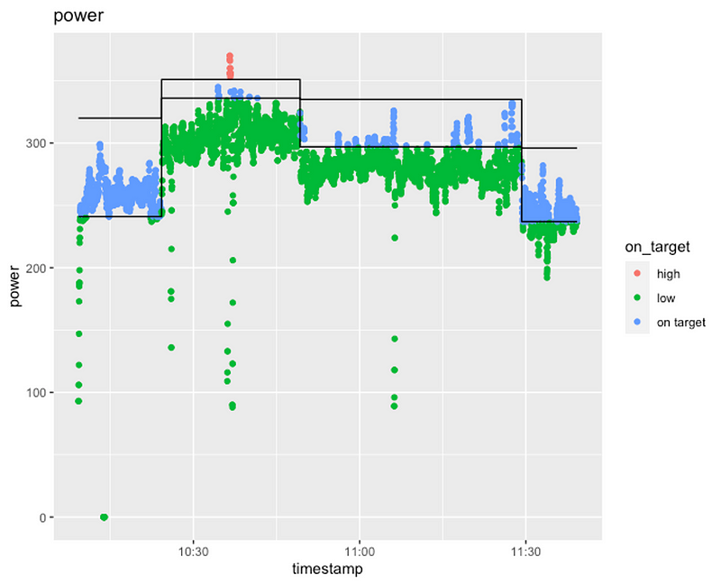
This chart represents a workout with four intervals. The black lines indicate the target ranges for each interval. The coloured dotted lines represent the “true” values recorded by my run power meter. Green dots indicate data points below the target, blue dots indicate data points on target, and red dots indicate data points above the target. A perfectly compliant workout would consist of all blue dots between the two horizontal black lines.
In this particular workout, poor compliance is expected as most of the data points are below the target. To understand the extent of deviation from the target, we can look at these charts:
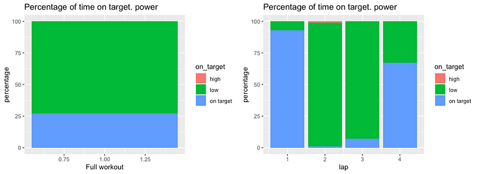
The bar chart on the left shows the percentage of data points below target (low), on target, or above target (high) for the entire workout. The chart on the right breaks down the compliance percentages for individual laps.
From the chart on the left, we can see that only 25% of the data points were on target, while the remaining 75% were below target.
Here is the coach feedback from Humango:
Hey Adrian! This workout was so undercooked it is raw. I’m getting salmonella just by analyzing it. If it feels too hard to complete, maybe we could revisit your threshold zones.
This analysis is entirely correct. I did not run as hard as I should have, resulting in under performance. No argument there.
For fun, let’s plot the same workout using heart rate data:
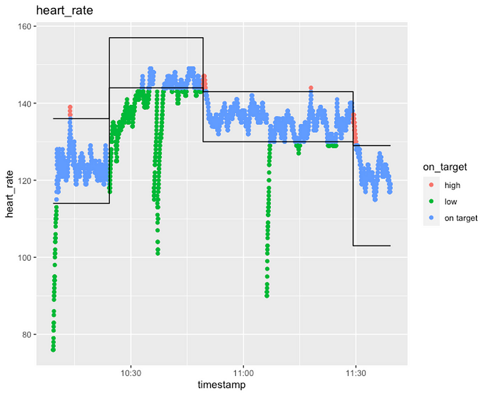
Interestingly, it appears that I was more compliant with heart rate than with power. This could be due to factors such as inaccurate thresholds in Humango or simply not feeling great on that particular day: high heart rate for low effort.
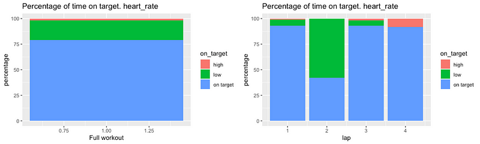
I was on target approximately 75% of the time, which is not bad.
Let’s set this information aside for now. Overall, we can understand what Humango is doing. We wanted to measure our workout by power, but we consistently ran at a lower power than the target, resulting in Humango indicating that we under performed. This assessment is logical and reasonable.
Second example
Now, let’s move on to another workout. Although my schedule called for a cycling workout with specific power targets, I decided to cycle freely without looking at the plan. I cycled at the intensity I felt like and for as long as I wanted. Here are the results:
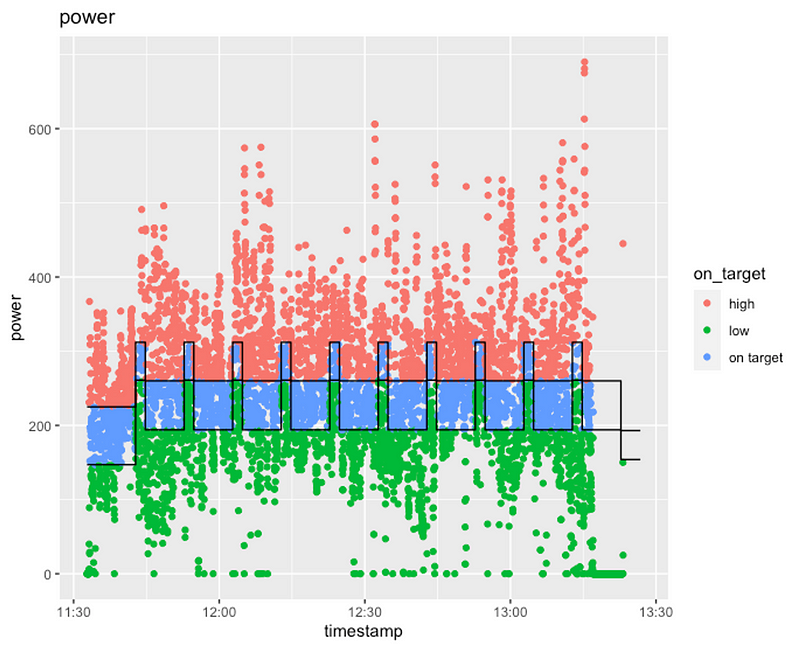
As expected, the compliance is all over the place. Sometimes I am above the target, sometimes below, and occasionally on target, although more by chance than intention. Let’s examine the compliance percentage charts:
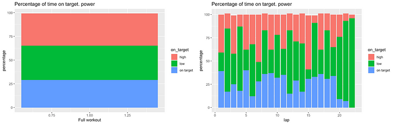
Overall, I was on target only 25% of the time. Therefore, I do not expect Humango to be pleased with my performance. Let’s see what feedback Humango provides:
Presumably you gave your recording device to your friend today? It’s too good to be yours…
I’m sorry, what? How is that possible? We did a random workout without following the target, were on goal only 25% of the time, and yet we receive positive feedback? Why? What is happening here?
Let’s examine the heart rate data:
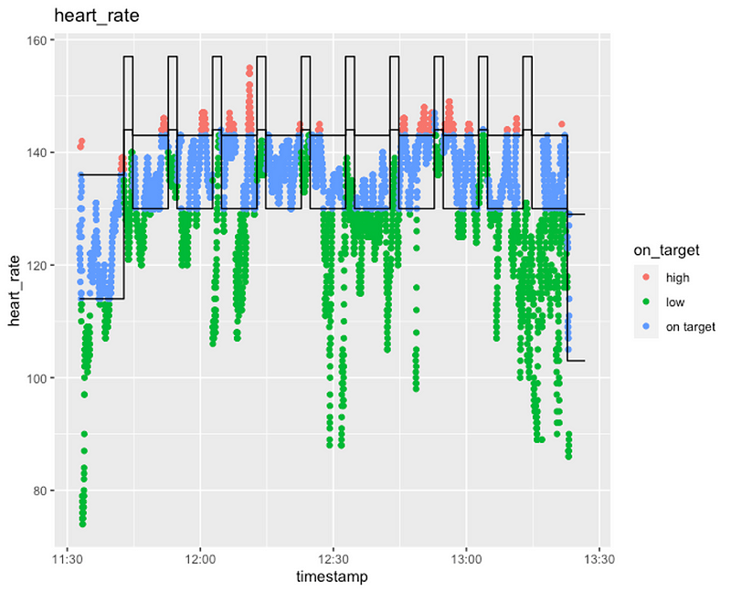
Once again, it is a mixed bag, with some data points on target and others way off target.
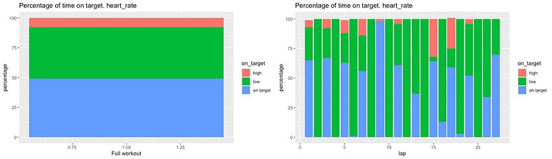
We were on target approximately 50% of the time. I doubt a real-life drill sergeant would be pleased if I hit the target only 50% of the time.
What is going on here? We don’t know, and this is precisely the problem with (lack of) explainable AI. We have a clearly wrong and unexpected result, but we don’t know why it occurred. Humango does not provide an explanation for such positive feedback when the numbers indicate otherwise.
Third example
Our final example is another run. This time, I set out with the aim of nailing the session. As always, I selected “Power” as my preferred metric and started the run. After 90 minutes, I returned, and here are the results:
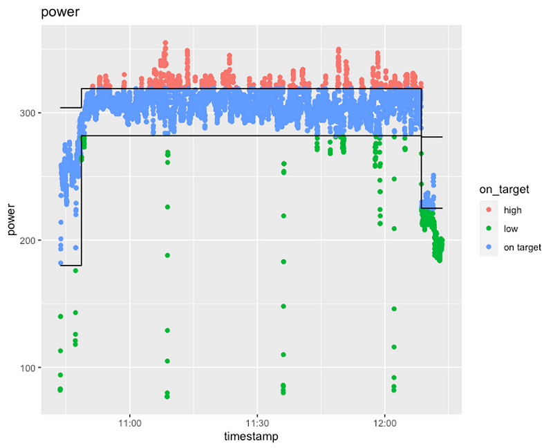
Yes, nailed it! The majority of data points are on target. To be precise:
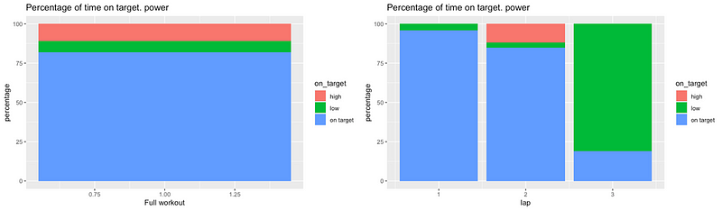
I was on target more than 75% of the time. Only during the last 5 minutes (a cool down) did I fall below the target, which I consider acceptable for a cool down.
Excited to receive positive feedback from Humango, I eagerly read the analysis:
I’m so happy you are getting out there and having fun. Don’t waste my time! You’ve spent too much time in zones that I didn’t prescribe. Follow instructions next time by not going over or under the intensity set.
Pardon me, what? Why? Where did it go wrong? It seems pretty spot on to me!
As always, let’s plot the heart rate data:
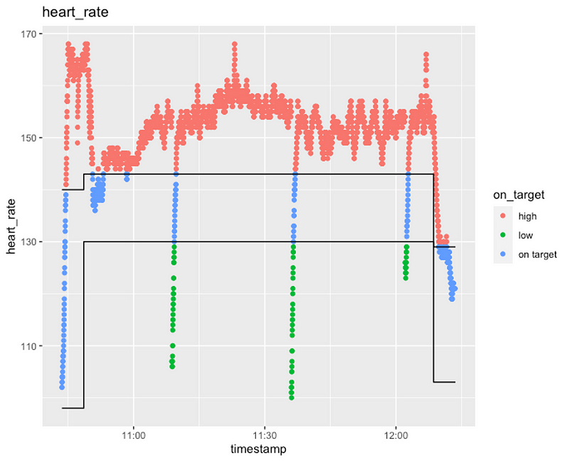
As seen in the chart, my heart rate data was consistently above target, exceeding the target approximately 75% of the time.
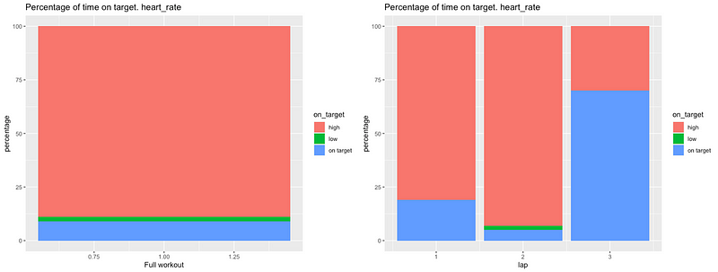
This might explain why the coach was dissatisfied, but not entirely. After all, we selected “Power”, not “Heart rate”, as our target metric. There is probably an issue with the thresholds here, as the two should match better: an easy run should look easy from every metric.
But there is still the issue that we would expect good feedback, but we are getting bad feedback. We can make hypothesis on why, but the model is not giving us any clear explanation. Note that the model is not giving us consumer any information. I hope that Humango data scientists have more information than we do.
To conclude, a few considerations.
Rubbish In, Rubbish Out
This is an obvious point. AI models, like the ones used by Humango, require accurate input data. If my input data, particularly my thresholds, are not accurate, Humango will struggle to provide quality feedback.
In my case, the power and heart rate zones do not match, indicating that my thresholds are likely inaccurate.
It is worth noting that while I initially set my thresholds, Humango now estimates them. I have noticed that Humango frequently makes small adjustments to my estimated thresholds, likely based on my performance and perceived effort rating. The initial inaccurate estimate may be due to the limited amount of data Humango has on me (I have only been using the platform for two months). However, given the adjustments being made to my thresholds, I believe they may eventually align in the future.
Explainable AI from a client perspective
What is the impact of Humango’s lack of transparency in providing feedback?
One might think that it is merely a matter of laughing off unreasonable feedback, brushing it aside, and moving on. However, there is more to it than that.
Firstly, users who are not experienced with structured workout plans may lose trust in the platform. For subscription-based companies this is a serious problem.
Secondly, there may be implications for the overall accuracy of the modeling pipeline. It is likely that the training season’s plan depends on our ability to meet the prescribed workouts. If Humango thinks we consistently under-perform even when it is not true, it will Humango adjusts our schedule to make it easier, too easy in fact. As a result, we will show up to our target race under-trained. This compromises the overall quality of Humango’s offering.
Finally, from a user’s perspective, it can be incredibly frustrating to be told that you under-performed or over-performed without any explanation or context. Imagine preparing a report for your boss, and they simply tell you it is terrible without providing any details or reasons. This lack of information would be frustrating, and it would be challenging to improve without knowing what went wrong in the first place.
Conclusion
Modern AI models are becoming increasingly complex, but this complexity does not eliminate the need for explainability. In fact, it is more important than ever to be able to interpret the predictions made by models.
Even in a commercial application like the one we examined today, model explainability should not be neglected. While no human lives depend on it, and there may be no regulatory audits of the models, failing to provide explanations can erode customer trust and drive them away. Without customers, there is no company or platform to sell.